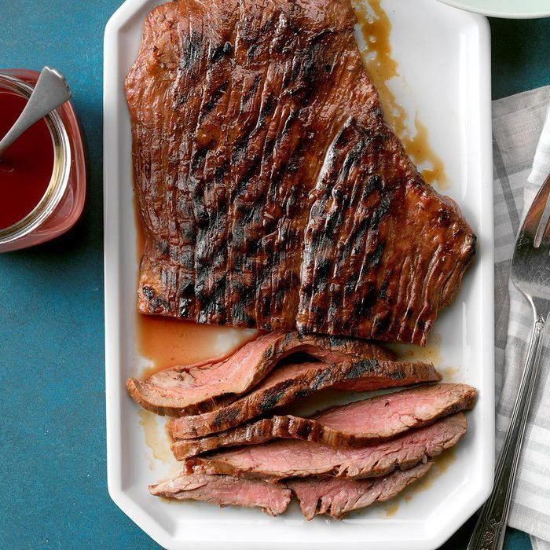

Flank Steak 4 ze Boiz

Marinated and grilled, steak is steak - try my flank
A small bit of prep can lead to some big flavors. lets take a closer look
What You Will Need?
- 1 cup Barbecue Sauce
- 1/4 cup beef broth
- 1/4 cup burgundy wine
- 1/4 cup lemon juice
- 2 pounds of flank steak
How It Will Go Down!
- Whisk (in a bowl dumba$$) the barbecue sauce, wine, broth, and lemon juice.
- Put 1 cup of marinade in a bag or dish with the steak and let marinade for 4 hours/overnight
- drain steak and cook over medium heat till at desired doneness(aprox 4-5 min a side) 135° is medium(if you like overcooked steak)
- Enjoy boiz!
Homepage